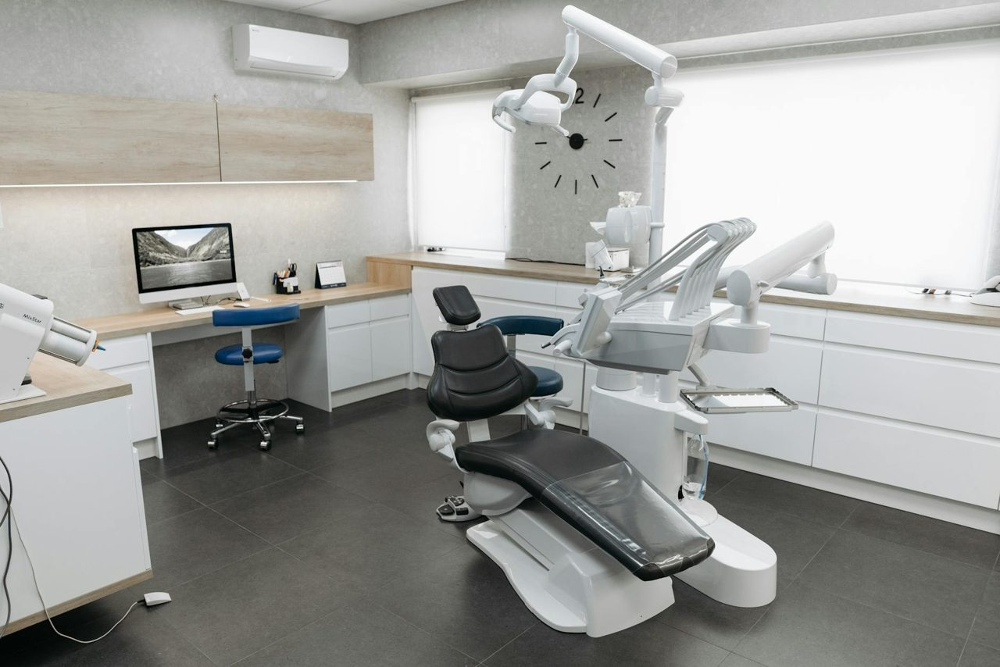
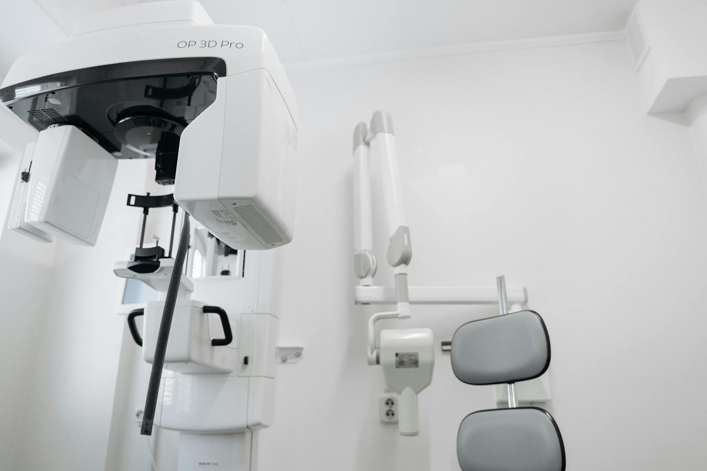
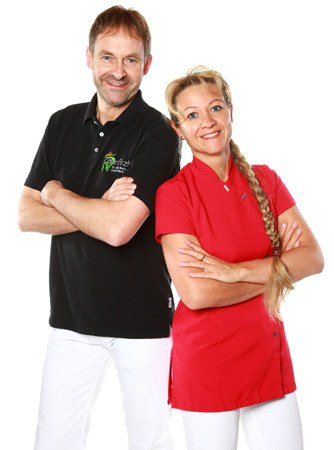

Zahnärzte Dr. Jörg & Annett Bischoff · Sassenburg/Triangel
Von der Zahnspange
bis zum Implantat.
Ganzheitliche Zahnmedizin in Sassenburg — wir behandeln den Menschen, nicht nur den Zahn. Mit der Ruhe und Aufmerksamkeit, die wir uns selbst wünschen würden.
Unsere Haltung
Was bedeutet bei Ihnen
„ganzheitliche Zahnmedizin"?
„Wir behandeln unsere Patienten so, wie wir selbst bei einem Arztbesuch behandelt werden möchten."
Für uns endet ein Zahn nicht am Zahnfleischrand. Beschwerden, Materialverträglichkeit und das Kausystem hängen mit dem ganzen Körper zusammen — deshalb berücksichtigen wir bei jeder Behandlung auch, was energetisch und funktionell mit dem Zahn in Verbindung steht.
Patientinnen und Patienten mit Schmerzen oder einem ästhetischen Anliegen behandeln wir auf Wunsch noch an dem Tag, an dem sie sich bei uns melden — unabhängig davon, ob sie bereits in unserer Praxis sind.
- Behandlung in Ruhe, ohne Eile
- Schmerzpatienten am selben Tag
- Verträgliche Materialien im Blick


Behandlungsspektrum
Welche Behandlungen
bieten Sie an?
Der Zahn als Teil des ganzen Menschen: Wir beziehen Funktion, Materialverträglichkeit und die Wechselwirkung mit dem Körper in Diagnose und Therapie ein — sanft, vorausschauend und auf Sie abgestimmt.
Natürlich schöne Zähne: zahnfarbene Füllungen, Keramik-Restaurationen und schonende Aufhellung — für ein Lächeln, das zu Ihnen passt, ohne künstlich zu wirken.
Fester Zahnersatz auf eigenen Wurzeln: Implantate ersetzen einzelne Zähne oder verankern Brücken und Prothesen stabil — für sicheres Kauen und ein gutes Gefühl beim Sprechen und Lachen.
Von der klassischen Zahnspange bis zur dezenten Korrektur: Wir bringen Zähne und Biss in eine gesunde, harmonische Stellung — für Kinder, Jugendliche und Erwachsene.
Knacken, Verspannungen, Kopf- oder Nackenschmerzen können vom Kiefergelenk kommen. Wir analysieren das Zusammenspiel von Biss, Muskulatur und Gelenk und behandeln die Ursache — nicht nur das Symptom.
Gesundes Zahnfleisch ist das Fundament. Wir erkennen Entzündungen früh und behandeln Parodontitis schonend, um Ihre eigenen Zähne langfristig zu erhalten.
Vorsorge ist die beste Behandlung: professionelle Zahnreinigung und individuelle Beratung halten Zähne und Zahnfleisch gesund — damit größere Eingriffe gar nicht erst nötig werden.
Das Praxisteam
Wer behandelt mich
persönlich?

Dr. Jörg & Annett Bischoff führen die Praxis gemeinsam — mit der Überzeugung, dass gute Zahnmedizin Zeit, Zuwendung und ein eingespieltes Team braucht.
In unserem Hause arbeiten wir fachlich bei jedem Patienten so, wie wir uns auch untereinander im Team behandeln würden: aufmerksam, ehrlich und auf Augenhöhe. So entsteht das Vertrauen, das eine Behandlung leicht macht.
Wir suchen Verstärkung: Zahnmedizinische Fachangestellte (m/w/d) oder höherqualifiziert, in Vollzeit. Wir freuen uns auf Ihre Bewerbung.
Über die Praxis hinaus
Zahnmedizin ist für uns auch eine Frage der Haltung. Neben der täglichen Arbeit in Sassenburg engagieren wir uns im zahnärztlichen Hilfseinsatz — gern erzählen wir Ihnen im persönlichen Gespräch mehr davon.
Termine
Wie bekomme ich
einen Termin?
Damit für Sie keine unnötigen Wartezeiten entstehen, vergeben wir unsere Termine ausschließlich nach telefonischer Vereinbarung. Ein kurzer Anruf genügt — bei Schmerzen bemühen wir uns, Sie noch am selben Tag zu sehen.
Jetzt anrufen: 05371 96920- Montag – Donnerstagnach Vereinbarung
- Freitagnach Vereinbarung
- Schmerzpatientenam selben Tag
So erreichen Sie uns
Kommen Sie vorbei —
oder rufen Sie kurz an.
Zahnärzte Dr. Jörg & Annett Bischoff
Lönsweg 138524 Sassenburg / Triangel
- Telefon
- 05371 96920
- Fax
- 05371 96922
Termine vergeben wir telefonisch. Wir nehmen uns Zeit für Ihr Anliegen — auch für Ihre Fragen vorab.
05371 96920